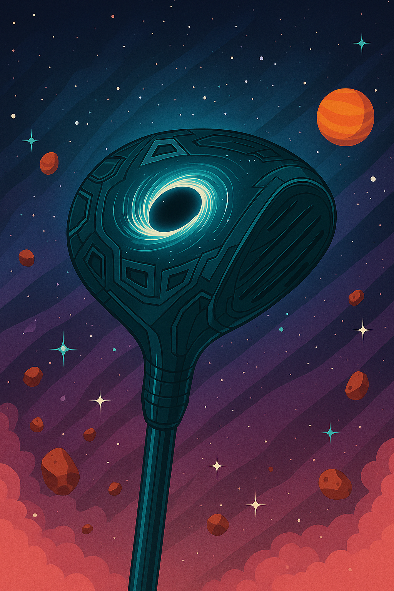
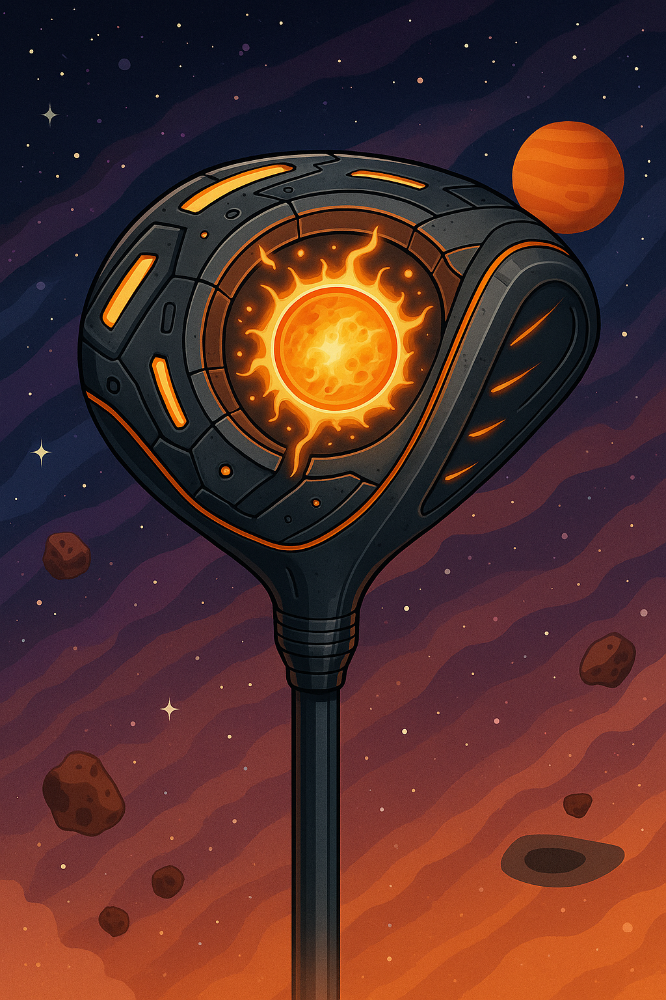
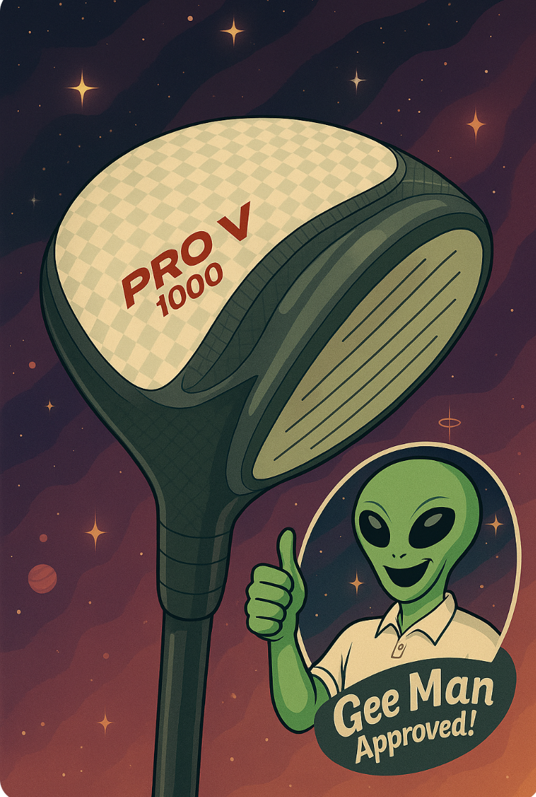

]The Golfly Blackhole Shot is truly a unique Driver. Powered by a singularity, this Driver is capable of launching your ball at speeds that are incomprehensible. The Blackhole Shot is the perfect Driver for those who want to take their game to the next level. With its advanced technology and sleek design, this Driver is sure to impress.

"The power of the sun, in the head of your driver." The Golfly Fusion Slugger is the professionals choice for courses spanning light years. With fusion technology, this driver is capable of launching your ball at speeds that are out of this world while costing little to no effort.

The club that won the 2025 IS Masters! The Golfly Pro V1000 is the perfect driver for those who want competetion grade tools.
Constructed with Jovian Ceramic, this driver is must have for any IS Masters competitor. With its advanced technology and sleek design,
this Driver is sure to impress and win championships for years to come.
A quote from the winner of the 2025 IS Masters:
"The Golfly Pro V 1000 is the best driver I have ever used. It's grip is comfy and
the head is light while being able to hit well. I was able to hit the ball farther than I ever thought possible. I would recommend
this driver to anyone who wants to enjoy the finer things in interstellar golfing."